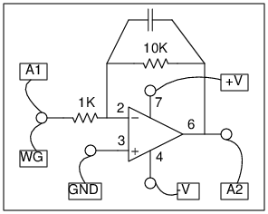

Make a circuit as shown in the figure.
Without the capacitor, it is an inverting amplifier with gain -2.2.
Apply a triangular wave of 1 volt amplitude at the input and watch the output.
We cannot have high gains because the power supply is only +/-6 volts.
Add a 0.1 uF capacitor and see the change in the output.
Observe the same at different frequencies.
What happens when you integrate the Sine wave ?